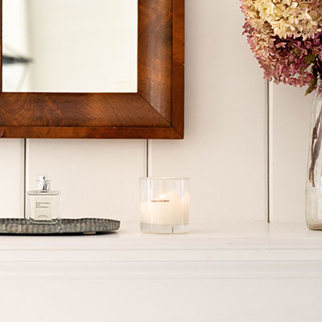

Wedding Receptions
Special Bride Room
Reception Room
Catering Menu
Here at Temple Inn and Suites we have everything you need for a Temple Wedding. We have a beautiful reception room that fits up to 200 guests, a fully catored menu with 3 options as well as a child option, and everything else you can imagine. Take a look at what we offer below and contact us about pricing and availability.
Reception Hall
Our reception hall is the perfect place for all of your guests. Feel connected to everyone with long tables that allow you to seat everyone together. We like to feel like one large family. This reception hall can seat up to 200 guests and we have high chairs available for the little ones.
The standard settings and decorations for this room are pictured here and include white plates, white linens, silver silverware, and drinkware out of glass. The primary colors and textures include wood, metal, and green, contemporary plants.
If you want to bring in your own center pieces or additional colors, you will have access to the hall starting at 6:00 AM on the day of your reservation.
Catering Menu
We offer a simple menu with three options for every guest. The standard menu has salmon, chicken, or shrimp salad and comes with sides and drinks. We also offer chicken tenders for children under 12 years old. We ask that you ask your guests in advance what they are wanting to keep cooking time to a minimum.
Pricing varies depending on the number of guests, so be sure to reach out and we can discuss the details.
Bride Room
Taking care of the guests is not the only important thing during a reception. We also need to make the bride and groom feel like they are the King and Queen. When you schedule the reception room, you will also receive special access to our bride room. This room has a full vanity fit for a queen along with everything in our king suite rooms. As a special touch, the bride and groom will receive a snack bar as they get ready for the reception and have a few minutes to themselves after their Temple wedding.
Be sure to take advantage of everything this beautiful room has to offer. Depending on the amount of time between your ceremony and reception we have snacks, a double shower, king size bed, jacuzzi, and more.
We look forward to serving you and making your wedding day special.